Stagecoach Greater Manchester Mobile Application
Introduction
The idea of the app came from the old Stagecoach website. The overall layout was unclear and was difficult to navigate. The website was not mobile friendly, which caused difficulties for mobile users.
According to Transport For Greater Manchester’s website there are 225 million local bus journeys in the city, thus there is a massive potential market, which could benefit from a new Stagecoach Mobile App.
The idea was to create brand awareness to be able to increase the total sales of tickets. With the app the company would be able to provide a more accurate and up to date information, which would therefore also have the possibility to increase customer satisfaction and in the long run expand the target audience.
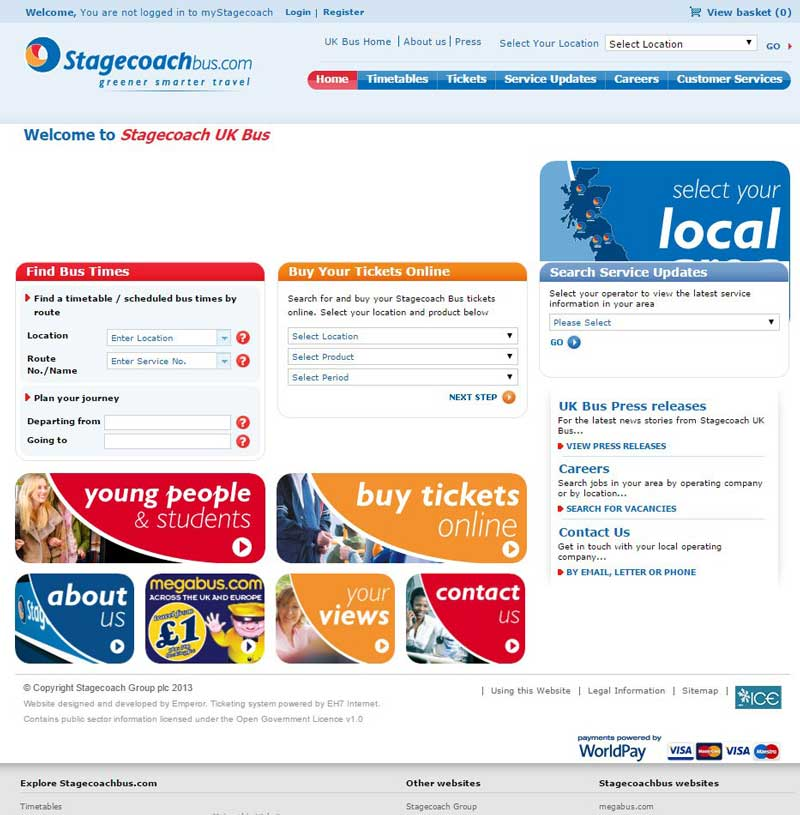Competitor Analysis
Competitor benchmarking is an essential step in the early phase of the project, in order to get an in-depth understanding of the direct and indirect competitors in terms of their strengths and weaknesses. (Allen and Chudley, 2012) With the analysis, ones is able to understand the topic in more depth, and learn from the strengths of the competitors as well as benefit from their weaknesses.
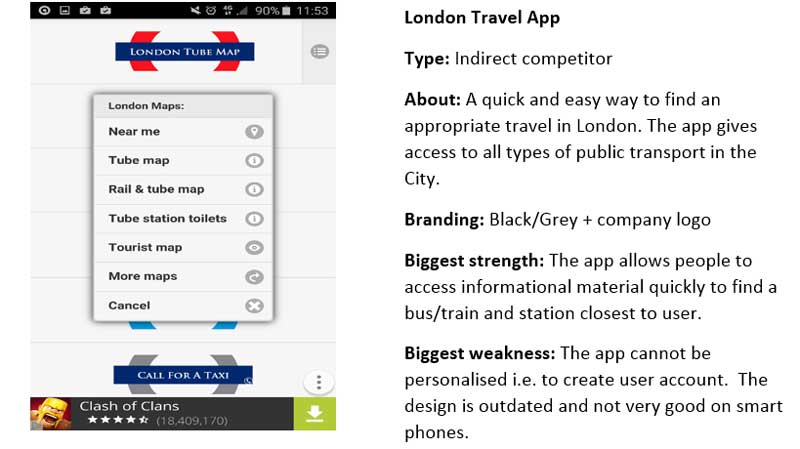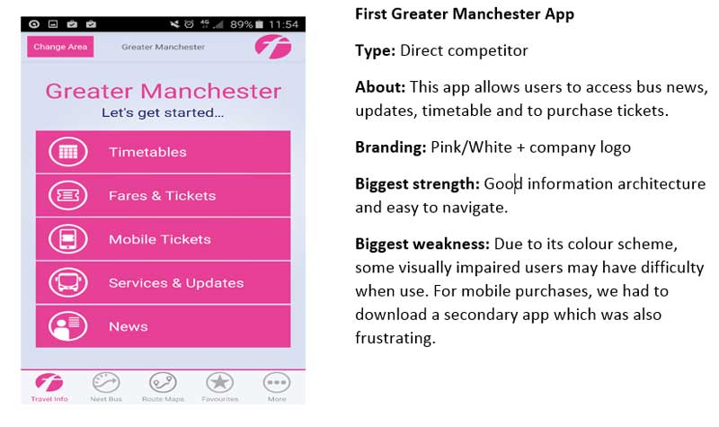
Personas
The persona is a fictional person with real characteristics based on user research and incorporating user goals, needs and interests. (Ilama, 2015:online)
In the aspect to personas, the element of 3-4 different personas were explored within the group in regards to the project. Within in these characteristic key features were pointed out that could be used in the current project. To be able to obtain these personas, a small number of potential users were interviewed to create 3 different personas, which were based on the outcome of the interviews.
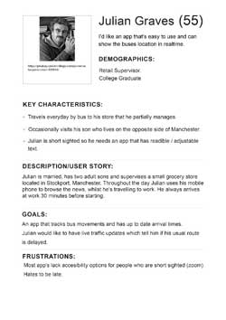 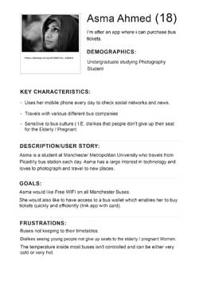 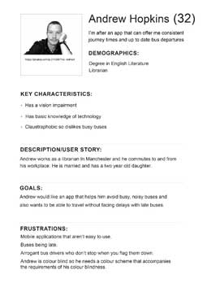“If a team doesn’t consider the context of the persona’s typical environment and activities, they risk creating a product experience that is disjointed, broken or incomplete. The persona is the voice of the user.” (Ilama, 2015:online)
User Requirements
“For great user experience it is essential to understand the users’ needs before the designing phase. (Allen and Chudley, 2012)
After the personas and competitor benchmarking, the user requirements were defined from the data that which was available. Some issues and missing features were found within the competitor apps and also the key needs of the stakeholders were identified in order to get a full picture of the requirements.
From the users point of view there were some key essentials that had to be met. These key prerequisites consisted of easy understanding of the app, as well as quick access to the journey planner, timetable and the e-ticket. The app also need to be accessible for visually impaired users.
On the other hand, Stagecoach looked into increasing their ticket sales via the app, therefore it has to be a prominent feature. It has to provide accurate information for the passengers to take off pressure from the customer services.
Storyboards
Storyboards are powerful tools for devising solutions with combining different elements, such as personas, their behaviours and requirements. A low-fidelity wireframe was created to help understand the problem, which the app was due to solve, by visualising the current problem. (Crothers, 2011:online)
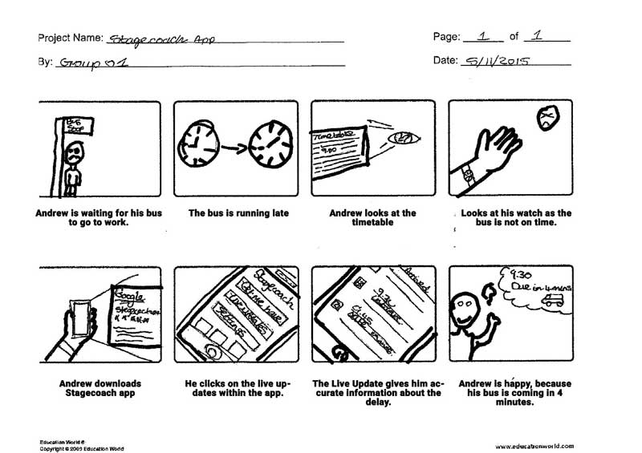Paper Wireframes
Wireframe is low-fidelity visual representation of the app to define the hierarchy of items on the screen. (Mears, 2013:online)
“The wireframes are the floor plan for your website, creating a vessel for which design and content can flow into.”(Mears, 2013:online)
Every group member created an individual sketch of the home screen. Our ideas were very similar: everyone agreed that the key features needed to be highlighted on the main screen. Then with little adjustments the first sketch of the home screen was ready.
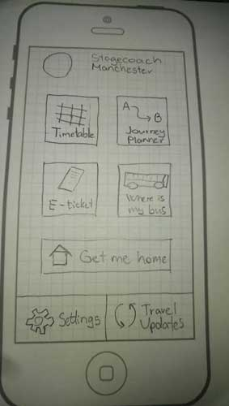Microsoft Windows was an inspirational tool, for creating the floating-panel layout. The reason behind this choice is that very key feature on the home screen is prominent, thus it does not cause any interruption or frustration for the user when looking for a certain feature within the app. Then the user journeys and requirements have been reviewed, thus the UX group could come up with the layout of other screens.
User Testing
It is crucial to test the product as soon as possible in order to detect serious usability problems very early in the development process (Krug 2010)
The initial user tests were made on a mobile phone using an app called POP. Some screenshots of the sketches had to be done then some basic interactivity could be added in the app. The team made up a list of tasks for the users related to the navigation. Then the sketch was tested on 10 different people that represented the target audience.
The main elements which were tested during this phase were the categorization scheme and labels. Are the things there where people expect to find them? Does it make sense?
The following issues were identified:
- Multiple users brought up the lack of home button; there should be an option of the home button throughout the app.
- In the journey planner the user should be able to switch their options of from-to as well as to-from, this gives flexibility and ease of use when planning their journey route.
- The ‘Get Me Home’ feature was unclear for some users.
- ‘Where is my bus’ icon is misleading, it could be a map instead of a bus.
To sum it up, the first testing phase was successful, the app received numerous positive feedbacks about the clear labels and the simple navigation. As it is based on a well-known pattern, most people are familiar with it. However there were minor things to consider before moving the next stage.
Axure Prototype
A rapid prototyping tool was used, called Axure to create a low-fidelity prototype.
Rapid prototyping helped to discover multiple approaches and ideas. It facilitated discussions through visuals instead of words, it ensured that everyone shared a common understanding, and it reduced risk of missed requirements.(Cerejo, 2010:online)
Based on the collected feedback from the user testing, the prototype contained the adjusted layout of the app.
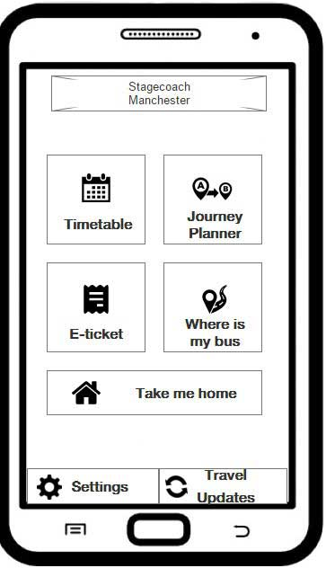 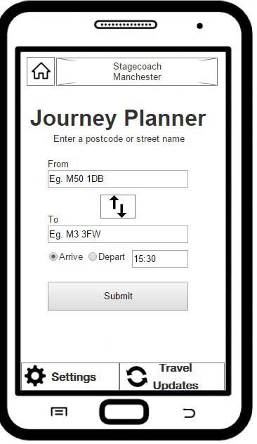At this stage the regular sequence been used: Design -> Review -> Refine
Multiple user tests have been conducted on the prototype. It’s been observed that most of the users were missing the feature of buying tickets from the ‘Timetable’, ‘Journey Planner’ or ‘Get Me Home’ pages, therefore these elements have been included in the next version of the prototype.
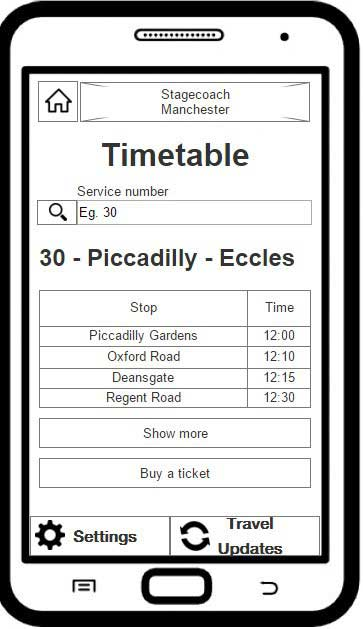The latest version is available on the following link: http://7kh8jf.axshare.com/home.html
InVision Prototype
After the last user testing session, based on the positive feedbacks the high-fidelity user interface of the app has been created in Photoshop. The colour scheme of the app is based on the company’s image, therefore it is using orange, blue, white and grey in a way that provides contrast and does not harm accessibility.
An online software, called InVision was used to link the pages together in an interactive-clickable way, thus further user testing were available via the app.
With this software high-fidelity prototypes can be created in under 5 minutes. It is easy to create lifelike interactions by adding customizable "hotspots" to the design files that link the screens together realistically. It supports all the major browsers and devices. (invisionapp, 2015:online)
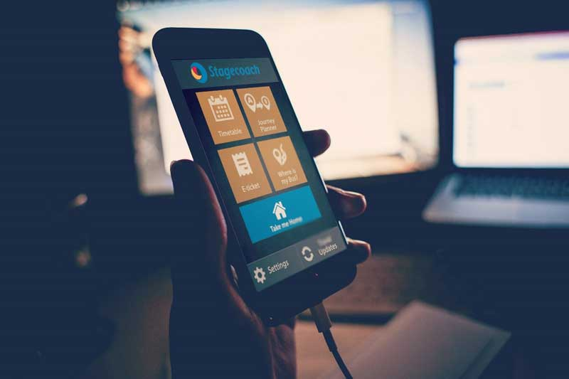The latest version of the InVision prototype is available on the following link: https://invis.io/E458V84D6
Conclusion
To sum it up, a user-centred product that provides great user experience in a relatively short time has been created. Since the project started, Stagecoach has released its new responsive website (https://www.stagecoachbus.com/ ). They provide less features than the mobile app, with more complex layout and navigation that can confuse their potential users.
Numerous research has been done with the stakeholders. The user needs were investigated, through interviews, but it was also of importance to examine the goals and intentions that Stagecoach wanted to achieve wit the product, this was a vital part of the project, as this could be seen as the core of the design element.
At the wireframing and prototyping stage, several user-tests were conducted in order to gain feedback from the potential users, thus allowing the app to continuously evolve. The design > test > refine cycle was applied throughout the entire project.
Based on the latest feedbacks, the Stagecoach Bus app is well-structured, easy to use, contains all major features that users want and provides a great user experience overall.